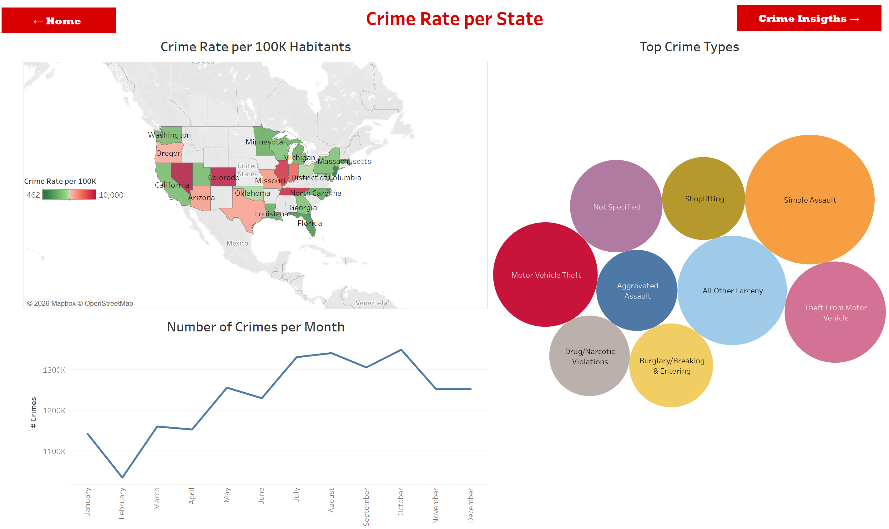
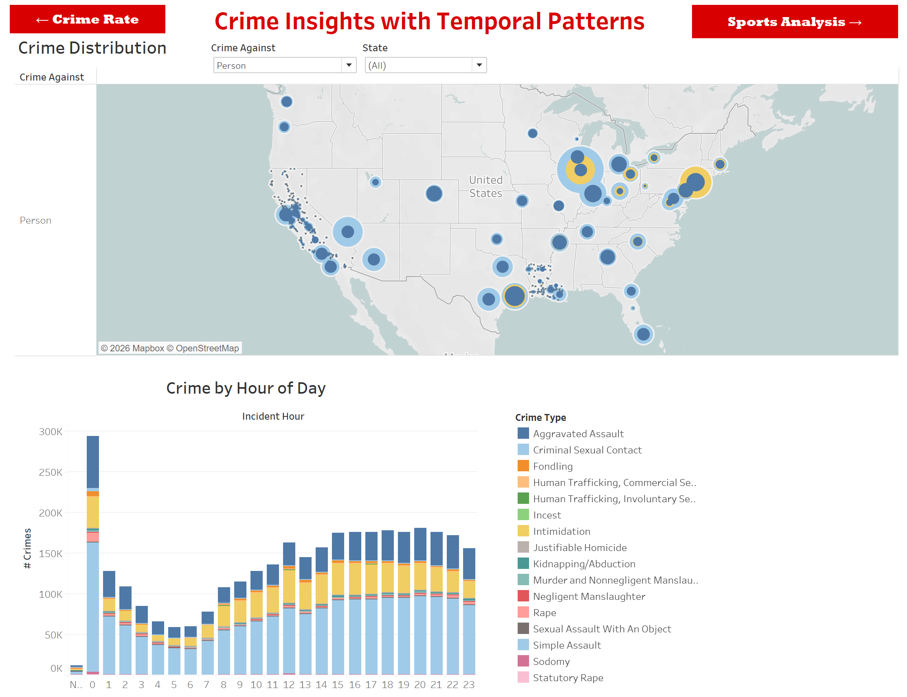
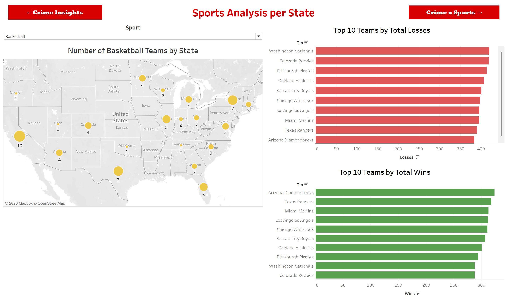
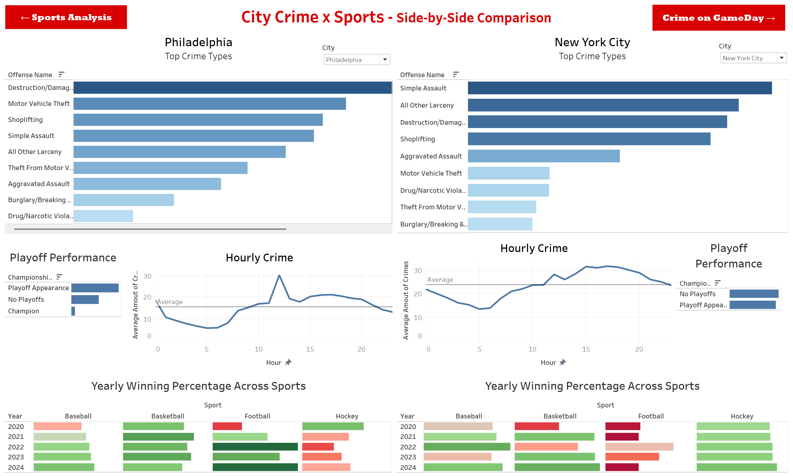
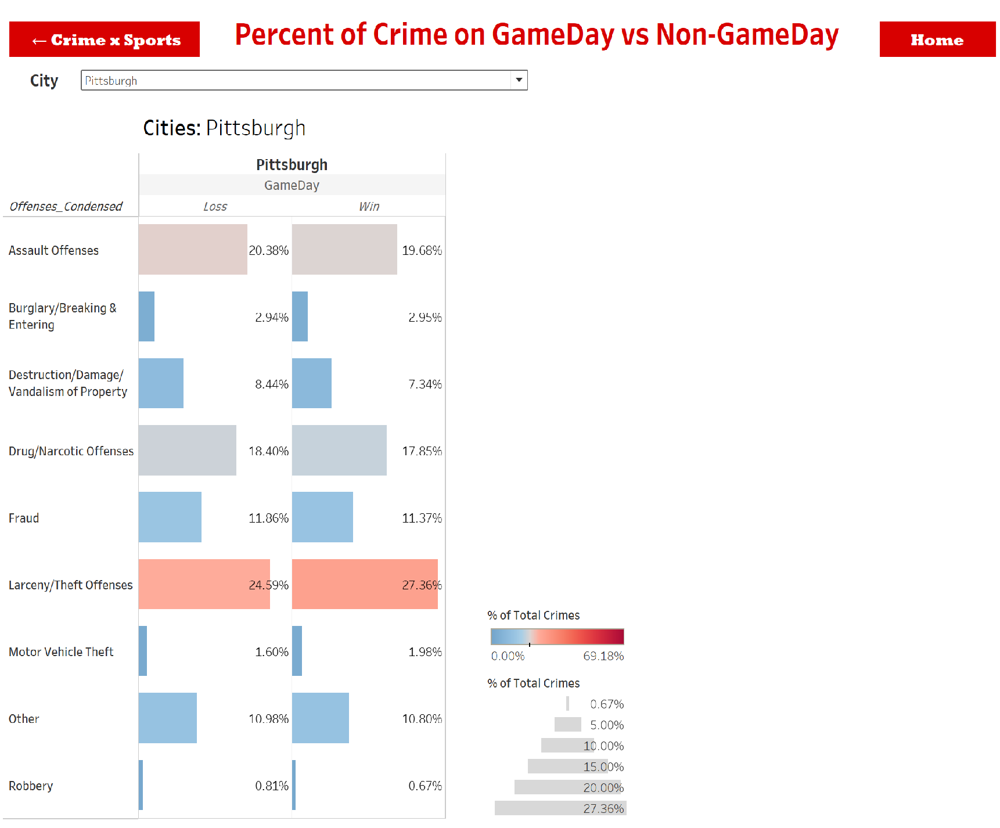
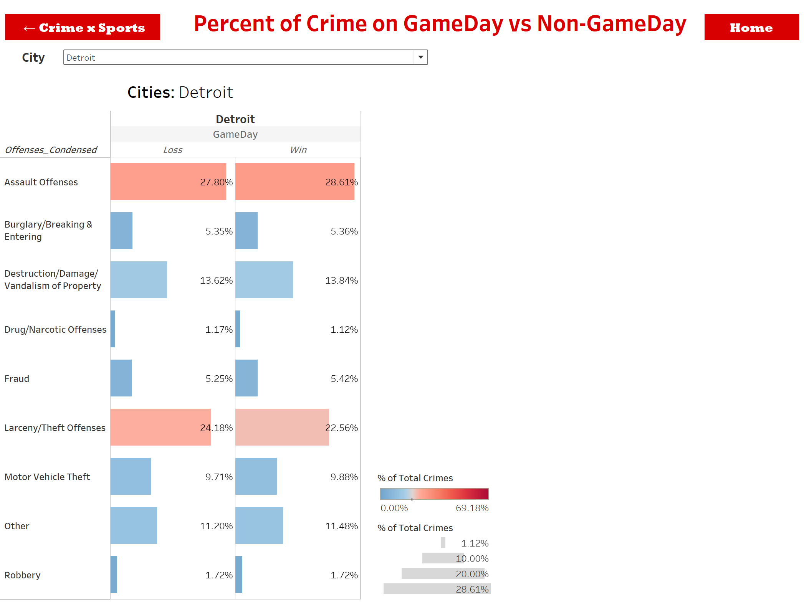

← Back to Projects
Data Visualization · Project 03
Crime x Sports: Does Your Team's Performance Affect Local Crime Rates?
Tableau
Data Visualization
FBI Crime Data
Sports Analytics
Dashboard Design
Geospatial Mapping
SQL
Storytelling with Data
The Question
When your city's team wins, do people celebrate peacefully? When they lose, does frustration spill into the streets? This project explored whether professional sports results, wins, losses, playoff runs, championships, have any measurable relationship with local crime rates across the United States.
The project was built for a Data Visualization course, with the emphasis on communicating complex multi-source data clearly through Tableau dashboards that anyone, not just data experts, could navigate and explore.
Data Sources
- FBI Crime Data Explorer: weekly crime incidents by city, including incident date and time, crime type (homicide, robbery, assault, larceny, etc.), and location type
- Pro Football Reference, Basketball Reference, Hockey Reference, Baseball Reference: weekly team performance data across NFL, NBA, NHL, and MLB including wins, losses, win percentage, and playoff results
- League game schedules: weekly calendar of games to identify game days vs non-game days for each city
The core analytical challenge was matching game-day dates to crime incident dates at the city level, across four different leagues with different season schedules, and then comparing crime patterns on game days (broken down by win vs loss) against non-game days.
The 5 Dashboards
Dashboard 01
Crime Rate per State
Crime rates per 100K inhabitants mapped by state, top crime types nationally, and monthly crime volume trends throughout the year.
Dashboard 02
Crime Insights with Temporal Patterns
Geographic distribution of crime by type and target (person vs property), a drilldown table by offense category, and crime volume by hour of day.
Dashboard 03
Sports Analysis per State
Distribution of teams across the U.S. by sport, top 10 teams by total wins and losses, filterable by league.
Dashboard 04
City Crime x Sports Comparison
Side-by-side city comparison of top crime types, hourly crime patterns, playoff performance, and yearly winning percentage across all four sports.
Dashboard 05
Crime on GameDay vs Non-GameDay
The core finding dashboard. For each city, shows the percentage breakdown of crime types on game days (split by win and loss) compared to non-game days. Filterable by city across all cities in the dataset.
Dashboard Walkthroughs
Dashboard 01: Crime Rate per State

The choropleth map shows crime rate per 100K inhabitants by state. The bubble chart highlights top crime types nationally, with Motor Vehicle Theft, Simple Assault, and Larceny leading. The line chart shows crimes peak in summer months and dip in February.
Dashboard 02: Crime Insights with Temporal Patterns

The interactive map allows filtering by crime type and state. The hour-of-day chart reveals a sharp morning spike around noon and steady evening activity, with a low point in the early morning hours between 3am and 6am.
Dashboard 03: Sports Analysis per State

Team density map shows California with 10 basketball teams, Texas and Florida with 7. The win/loss bar charts allow comparison of team performance across leagues, filterable by sport.
Dashboard 04: City Crime x Sports Side-by-Side

Philadelphia vs New York City comparison. The hourly crime chart shows Philadelphia has a midday spike while NYC crime is more evenly distributed throughout the day. Yearly winning percentage heatmaps show performance across all four sports from 2020 to 2024.
The GameDay Finding
The most interesting dashboard was the GameDay comparison. The data revealed that the relationship between sports results and crime is not as dramatic as popular intuition suggests, but patterns do exist at the city and crime-type level.
Pittsburgh: Crime on GameDay

In Pittsburgh, Larceny/Theft spikes slightly on win days (27.36% vs 24.59% on loss days), while Assault offenses are nearly the same across win and loss game days.
Detroit: Crime on GameDay

Detroit shows Assault as the dominant crime category on both win and loss days (27.80% and 28.61%), with very little variation by game outcome, suggesting other city-level factors drive crime more than sports results.
Key Takeaways
- Motor Vehicle Theft, Simple Assault, and Larceny are the most common crime types nationally across all cities in the dataset
- Crime peaks in summer and drops in February, consistent with seasonal patterns seen in other studies
- The GameDay effect is city-specific and crime-type specific. No universal pattern emerged across all cities and sports
- Larceny tends to increase slightly on win days in some cities, possibly reflecting larger crowd gatherings and more opportunity for theft
- The dataset's scale made visualization design the central challenge, with millions of records across multiple geographies and sports, the project was fundamentally an exercise in making complexity navigable
What This Project Demonstrates
More than the findings themselves, this project showcases the ability to design multi-layered, interactive Tableau dashboards that guide a non-technical audience through a complex analytical story. It involved data from four different sources with different structures and granularities, required significant data preparation and joining logic, and demanded thoughtful decisions about how to present uncertainty honestly, including acknowledging that the sports-crime relationship is hard to isolate cleanly at the city level.